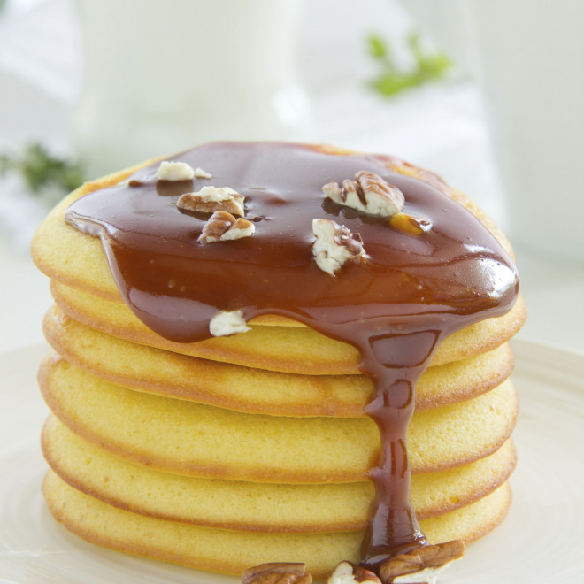

Homepage
Vanilla Protein Pancakes

Description
One of my goal in life, among other things (like learning to code), is to be fit.
But one of my biggest weakness is food. I love to eat, probably a bit too much for my own good.
So, how do I combined the two? By eating delicious meals that are lower in calorie and made with healthy ingredient.
This is the recipe for one of those meals.
Ingredients
- 2 eggs
- 50gr oats
- 1 banana (~130g)
- 35gr vanilla protein powder
- 50ml hazelnut milk (or any plant milk you like)
- 1 teaspoon baking powder
- 1 pinch of cinnamon
Steps
- Put all the ingredients in a blender, and blend until you have an homogenous texture
- Pour the desired amount of dough on a pan set to low-medium eat
- When bubles start to form, flip the pancakes over
- That's it! Put them on a plate and top it whith fruits or a low calorie syrup, or both!